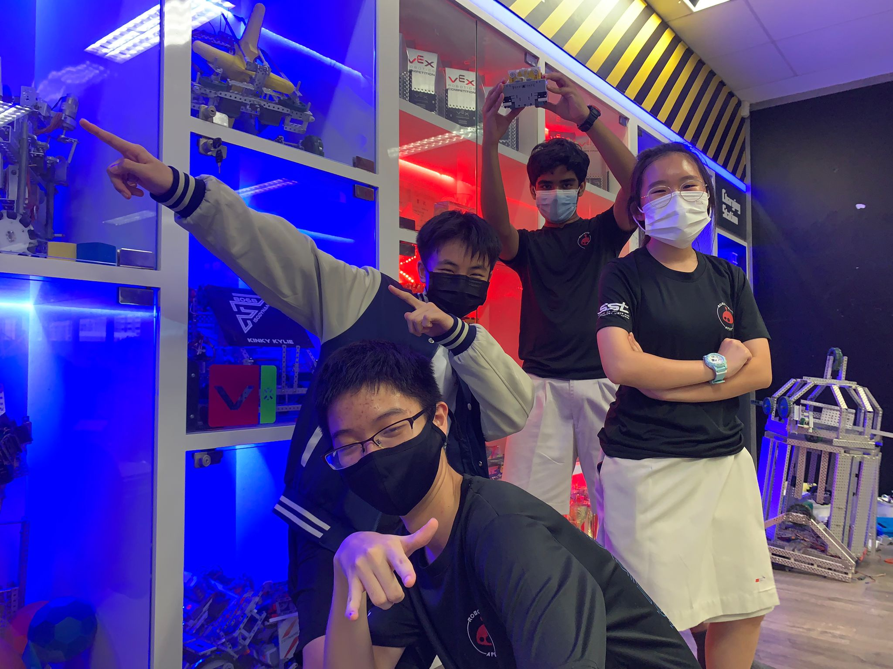
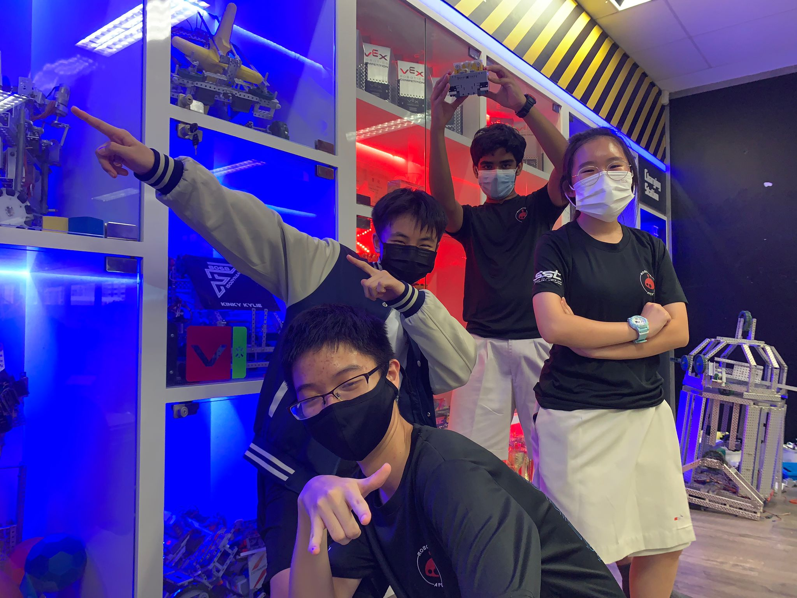

Designed a keynote to introduce robotics in an engaging and encouraging way for young participants.
- Built compelling slide narratives and visual hierarchy.
- Collaborated with organizers to match educational goals.
- Used storytelling to make technical concepts approachable.

 
